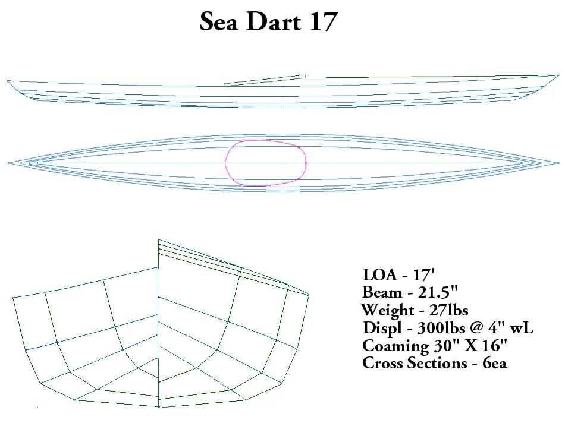

| Sea Dart 17 | Menu Previous Page Next Page |
|

The Sea Dart 17 is a multi-chine touring kayak similar in side profile to the Sea Tour 17EXP but having a narrower cross section profile... 21.5" vs 24" for the EXP.
The Sea Dart 17 can be constructed as either a wood frame non folder or an aluminum / HDPE folding kayak. Woodstrip offsets ( 18" spacing) are available on
request.
|
|